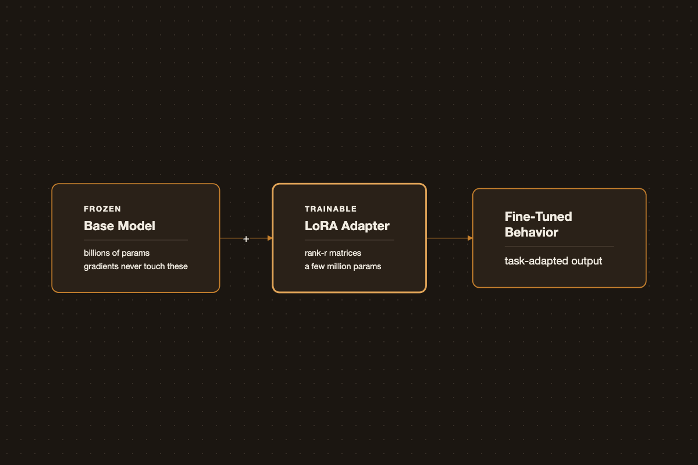

Fine-Tuning LLMs: LoRA to AWS Bedrock
Fine-Tuning LLMs: LoRA to AWS Bedrock

Pretrained LLMs are general-purpose. Fine-tuning adapts one to a narrower domain or task using far less data and compute than pretraining from scratch.
Full Fine-Tuning vs PEFT
Full fine-tuning updates every weight in the model - accurate, but expensive in GPU memory and easy to overfit on small datasets. Parameter-efficient fine-tuning (PEFT) methods like LoRA freeze the base model and train small low-rank adapter matrices instead, cutting trainable parameters by orders of magnitude while keeping most of the quality.
from transformers import AutoModelForCausalLM, AutoTokenizer
from peft import LoraConfig, get_peft_model
model = AutoModelForCausalLM.from_pretrained("meta-llama/Llama-3-8b")
tokenizer = AutoTokenizer.from_pretrained("meta-llama/Llama-3-8b")
lora_config = LoraConfig(
r=16,
lora_alpha=32,
target_modules=["q_proj", "v_proj"],
lora_dropout=0.05,
task_type="CAUSAL_LM",
)
model = get_peft_model(model, lora_config)
model.print_trainable_parameters()Data Preparation
- Keep examples in a consistent instruction/response format.
- Favor quality over quantity - a few thousand well-curated examples usually beat a large noisy dataset.
- Deduplicate aggressively; repeated examples skew the model more than expected.
Evaluation
Track validation loss, but don’t stop there - run side-by-side qualitative comparisons against the base model on real prompts. Loss going down doesn’t always mean the outputs are actually better for your task.
Fine-tuning is iterative: start small with LoRA on a subset of data before committing to a full fine-tune or a larger training run.
AWS Bedrock Custom Model Service
Bedrock’s custom model service wraps three distinct customization workflows behind one managed offering - CreateModelCustomizationJob with a different customizationType - so you don’t have to run your own training infrastructure. All three read training data from S3 as .jsonl and write a versioned custom model artifact back to your account.
Reinforcement fine-tuning (new)
How it works. Instead of matching labeled outputs, the model generates several candidate responses per prompt, a reward function scores each one, and Bedrock updates the model with Group Relative Policy Optimization (GRPO) to prefer higher-scoring responses. There’s no gradient step against a single “correct” answer - the signal is relative quality across the sampled candidates. This is why it suits tasks where correctness is graded rather than binary: multi-step reasoning, code generation, tool use, or open-ended writing where several answers are valid but some are clearly better.
Reward functions come in two flavors:
- RLVR (verifiable rewards) - a rule-based grader for objective tasks (math, code execution, format checking).
- RLAIF (AI feedback) - an LLM-as-judge grader for subjective tasks (instruction following, tone, RAG faithfulness), using Bedrock’s built-in judge prompt templates.
As of early 2026, supported base models are Amazon Nova 2 Lite, OpenAI gpt-oss-20B, and Qwen3 32B.
Data format. Each record is an OpenAI-style chat-completion object with a reference_answer the reward function uses to grade the response - the field isn’t restricted to plain text, it can be any structure your grader understands. A minimum of 100 records is required; extra fields (e.g. difficulty_level, domain) are passed through to the grader as metadata:
{
"id": "algebra_001",
"messages": [
{"role": "system", "content": "You are a math tutor"},
{"role": "user", "content": "Solve: 2x + 5 = 13"}
],
"reference_answer": {"solution": "x = 4", "steps": ["2x = 8", "x = 4"]},
"difficulty_level": "easy",
"domain": "algebra"
}Reward function (Lambda grader). A custom grader receives the full conversation plus your reference_answer in metadata, and must return a normalized reward per sample:
def lambda_handler(event, context):
results = []
for sample in event:
response_text = sample["messages"][-1]["content"]
reference = sample["metadata"]["reference_answer"]
# your scoring logic - exact match, execution check, semantic diff, etc.
score = score_response(response_text, reference)
results.append({
"id": sample["id"],
"aggregate_reward_score": score, # normalized, e.g. 0.0-1.0
"metrics_list": [
{"name": "accuracy", "value": score, "type": "Reward"}
],
})
return resultsLaunching a job (boto3):
import boto3
client = boto3.client("bedrock")
response = client.create_model_customization_job(
jobName="rft-math-tutor",
customModelName="nova-lite-math-rft",
roleArn="arn:aws:iam::<account-id>:role/BedrockCustomizationRole",
baseModelIdentifier="amazon.nova-2-lite-v1:0:256k",
customizationType="REINFORCEMENT_FINE_TUNING",
trainingDataConfig={"s3Uri": "s3://my-bucket/rft/train.jsonl"},
validationDataConfig={"validators": [{"s3Uri": "s3://my-bucket/rft/val.jsonl"}]},
outputDataConfig={"s3Uri": "s3://my-bucket/rft/output/"},
customizationConfig={
"rftConfig": {
"graderConfig": {
"lambdaGrader": {"lambdaArn": "arn:aws:lambda:us-east-1:<account-id>:function:math-grader"}
},
"hyperParameters": {"epochCount": 3, "trainingSamplePerPrompt": 4},
}
},
)Evaluation metrics. Training emits average reward and validation reward curves per checkpoint (validation reward is expected to trail training reward - a widening gap signals overfitting), plus validation episode length to track response verbosity. Beyond the training curves, Bedrock lets you A/B the RFT model against the base model with the same prompt set in the Playground, or run a full Model Evaluation job with your own test set for a systematic before/after comparison.
Supervised fine-tuning
How it works. Standard supervised learning: the model is trained to reproduce labeled prompt → completion pairs, minimizing next-token loss directly against the target text. It’s the right default when you already have good examples of the exact output you want and don’t need a scored, multi-candidate signal.
Data format. For non-conversational tasks it’s flat prompt/completion pairs; for chat models it follows the Converse API message schema with system/user/assistant turns:
{"prompt": "Summarize the article about climate change.", "completion": "Climate change refers to the long-term alteration of temperature and typical weather patterns in a place."}{
"system": "You are a helpful assistant.",
"messages": [
{"role": "user", "content": "What is AWS?"},
{"role": "assistant", "content": "It's Amazon Web Services."}
]
}Minimums vary by model - e.g. 32 records for Claude 3 Haiku, 100 for Llama 3.1/3.3 - up to 10,000 training records by default (adjustable via service quota).
Launching a job (boto3):
response = client.create_model_customization_job(
jobName="sft-support-tone",
customModelName="haiku-support-v1",
roleArn="arn:aws:iam::<account-id>:role/BedrockCustomizationRole",
baseModelIdentifier="anthropic.claude-3-haiku-20240307-v1:0",
customizationType="FINE_TUNING",
trainingDataConfig={"s3Uri": "s3://my-bucket/sft/train.jsonl"},
validationDataConfig={"validators": [{"s3Uri": "s3://my-bucket/sft/val.jsonl"}]},
outputDataConfig={"s3Uri": "s3://my-bucket/sft/output/"},
hyperParameters={"epochCount": "3", "learningRate": "0.00001", "batchSize": "8"},
)Evaluation metrics. Bedrock reports training and validation loss curves after the job completes - useful for spotting under/overfitting, but not a proxy for task quality. Pair it with a Bedrock Model Evaluation job on held-out prompts using reference-based automatic metrics - ROUGE for summarization, token-level F1 for QA/extraction, BERTScore for semantic similarity where wording legitimately varies - and, for open-ended output, an LLM-as-judge score alongside a manual side-by-side read against the base model.
Distillation
How it works. A large teacher model generates (or already has, via invocation logs) responses to your prompts, and those responses fine-tune a smaller, cheaper student model. Bedrock can also apply proprietary data-synthesis techniques - generating paraphrased prompts, expanding coverage - to enrich a small seed set up to 15k prompt-response pairs before training the student. In practice this trades a few points of accuracy for large latency and cost wins: AWS reports distilled models running up to 500% faster and 75% cheaper, with well under 2% accuracy loss on tasks like RAG.
Data format. The input is just prompts - no labels needed unless you want to anchor quality:
{"prompt": "Classify the sentiment of this review: 'The battery life is incredible.'"}Alternatively, reuse invocation logs already stored in S3 (with CloudWatch invocation logging enabled) as training data, optionally filtered by requestMetadata:
{"requestMetadata": {"project": "CustomerService", "priority": "High"}}If the teacher model matches the model that produced the logs, Bedrock reuses the logged responses directly instead of re-querying the teacher - cheaper, since no new teacher inference is billed.
Launching a job (boto3):
response = client.create_model_customization_job(
jobName="distill-support-classifier",
customModelName="titan-lite-support-distilled",
roleArn="arn:aws:iam::<account-id>:role/BedrockCustomizationRole",
baseModelIdentifier="amazon.titan-text-lite-v1", # student model
customizationType="DISTILLATION",
trainingDataConfig={"s3Uri": "s3://my-bucket/distill/prompts.jsonl"},
outputDataConfig={"s3Uri": "s3://my-bucket/distill/output/"},
customizationConfig={
"distillationConfig": {
"teacherModelConfig": {"teacherModelIdentifier": "anthropic.claude-3-5-sonnet-20240620-v1:0"}
}
},
)Evaluation metrics. Because the whole point is a favorable accuracy/latency/cost trade, evaluate the student against the teacher on all three axes rather than accuracy alone: run a Bedrock Model Evaluation job with the same test prompts through both models to get a direct accuracy delta, then separately track p50/p90 latency and cost per 1K tokens for the student versus teacher to confirm the trade you’re accepting is the one you intended.
Across all three, the pattern is the same: RFT trades labeled data for a scored signal on hard, multi-step tasks; SFT is the direct route when you already have good labeled examples; distillation isn’t really about teaching new behavior - it’s compressing a model you already trust into something faster and cheaper to run.